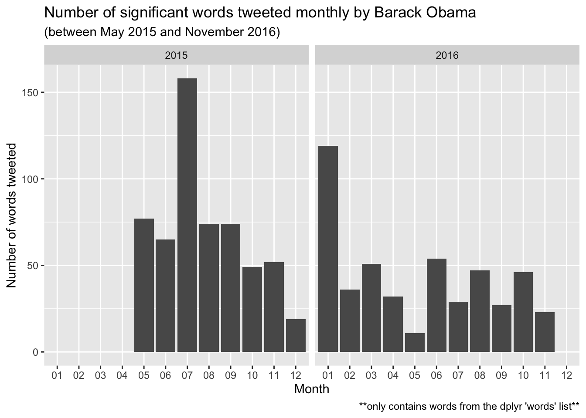
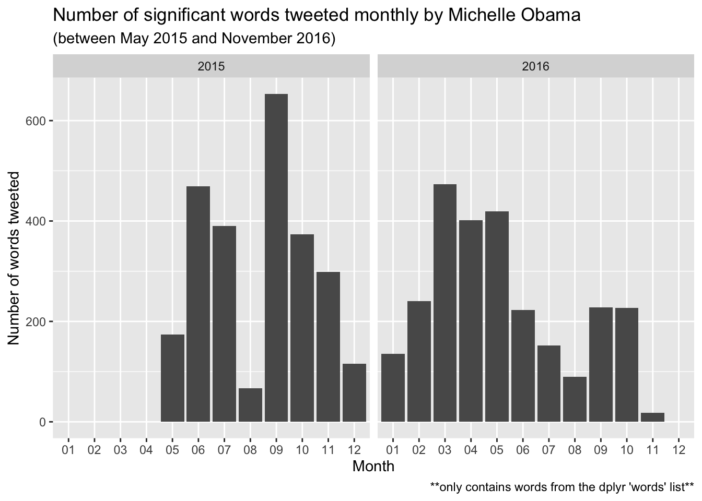
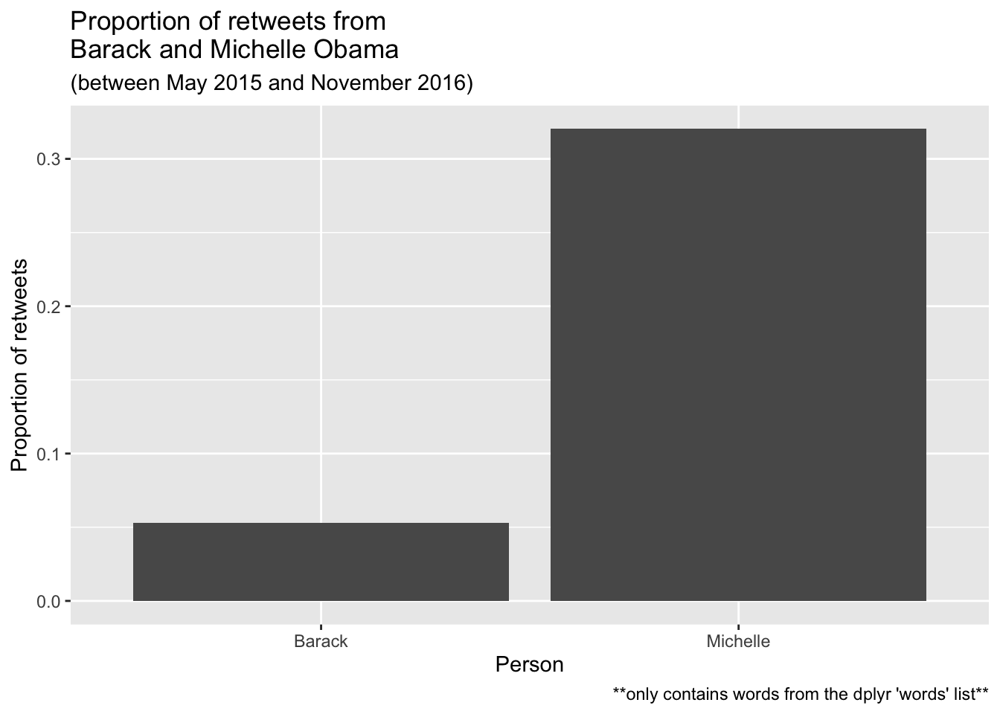
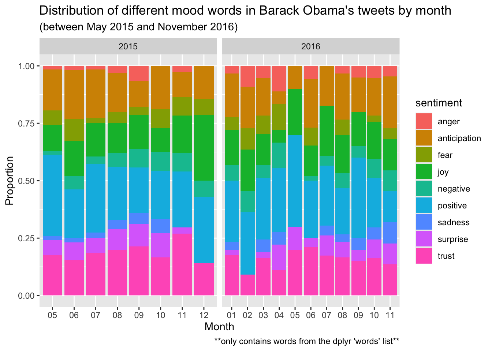

Mini Project 1
For one reason or another, the statistics gods have blessed us with data of all of President Barack Obama and First Lady Michelle Obama’s entire tweet history during Obama’s presidency. In this project we will explore the results of wrangling this data and utilizing it to create tons of interesting statistics, plots and graphs.
Number of significant words tweeted per month

![The chart shown is a stacked bar graph showing the total number of significant words tweeted per month by both Barack and Michelle Obama during Obama's presidency. The x axis measures each month and spans from 05/2015 to 11/2016. The y axis measures the number of words tweeted and ranges from 10 to 155 words. The graph shows a significant variability in the number of words tweeted by month by both Barack and Michelle. It it also clear that Michelle was significantly more involved on Twitter during this time period compared to her husband since she continuously has the vast majority of significant words tweeted each month.](mp1_files/figure-html/unnamed-chunk-6-1.png)
Our story begins with simply counting how many significant words were tweeted by across each recorded month for a Barack-exclusive dataset, a Michelle-exclusive dataset, and a combined dataset. It’s important to note that the term “significant words” can be defined as words that are not stopwords (ie: the, to, and, etc.), and words that are within dlpyr’s word list package. This was done the because there were lots of stopwords and online links that were parsed into words during the data wrangling process that needed to be filtered out. Therefore, the words recorded in lots of the dataset are a very limited (but relevant) subset of the complete Twitter history of our former executive leaders.
We can see that there is a large variability within how much was tweeted by month for both Barack and Michelle, especially during 2015 which may call to the variety of everchanging issues and matter of which it is important to post about during each month. Both people also seemed to tweet much less during the following year at their own respective rate, which could potentially indicate a more relaxed, habitual usage of twitter as they get used to this new platform of media.
Most common words by month
# A tibble: 19 × 4
# Groups: year, month [19]
year month word n
<chr> <chr> <chr> <int>
1 2015 05 change 4
2 2015 06 health 5
3 2015 07 people 8
4 2015 08 deal 4
5 2015 09 cut 3
6 2015 10 today 3
7 2015 11 america 3
8 2015 12 strong 2
9 2016 01 great 4
10 2016 02 house 2
11 2016 03 apply 3
12 2016 04 today 3
13 2016 05 day 2
14 2016 06 court 3
15 2016 07 day 2
16 2016 08 world 4
17 2016 09 history 2
18 2016 10 today 3
19 2016 11 today 3# A tibble: 19 × 4
# Groups: year, month [19]
year month word n
<chr> <chr> <chr> <int>
1 2015 05 lady 20
2 2015 06 lady 76
3 2015 07 lady 42
4 2015 08 check 3
5 2015 09 school 92
6 2015 10 lady 39
7 2015 11 lady 60
8 2015 12 lady 8
9 2016 01 lady 9
10 2016 02 lady 28
11 2016 03 lady 67
12 2016 04 lady 50
13 2016 05 lady 47
14 2016 06 lady 29
15 2016 07 lady 10
16 2016 08 america 4
17 2016 09 lady 28
18 2016 10 lady 34
19 2016 11 achieve 1Next, we see the most common words by month recorded for both Barack and Michelle (since the majority of tweets during this time period come from Michelle, the combined dataset isn’t used here). The words most commonly used by Barack emit a sense of political activism, initiative and inspiration–including great, change, health, people, history, etc.. On the other hand, almost of all of Michelle’s most commonly used words by month were “lady” (possibly in self-reference to her title as first lady)–not at exciting at all.
Most common word pairs
# A tibble: 971 × 3
word1 word2 n
<chr> <chr> <int>
1 climate change 11
2 white house 10
3 health care 7
4 gun violence 6
5 affordable health 5
6 million americans 5
7 supreme court 5
8 health coverage 4
9 paris agreement 4
10 2 yrs 3
# ℹ 961 more rows# A tibble: 10,049 × 3
word1 word2 n
<chr> <chr> <int>
1 michelle obama 83
2 kitchen garden 78
3 military families 66
4 girls education 64
5 white house 63
6 whitehouse kitchen 63
7 president obama 60
8 watch live 50
9 lady michelle 44
10 flotus amp 43
# ℹ 10,039 more rowsAfter analyzing all of the most common individual words, I deemed it appropriate to take this data analysis to the next level and identify the most common pairs of words used by both Barack and Michelle in their tweets. Because there are so few examples to sample from, we will be counting from the total collection of pair words rather than sorting it by month. The politically relevant theme of Barack’s tweets carries over into a more complete demonstration when analyzing these bigrams, with examples revealed such as “climate change”, “health care”, “gun violence”, and “paris agreement”. With Michelle, our theory of self-referencing is somewhat justified by her most common bigram being “michelle obama”. Aditionally, an activism towards more auxiliary political issues is revealed through this list by entries such as “military families” and “girls education”.
Proportion of retweets

Some of the different tweeting habits between Michelle and Barack could potentially be explained by how often either one of them send out a retweet versus sending out an original tweet. By detecting which of each person’s tweets start with the letters “RT” we can identify if any given particular tweet was a retweet or not, with our resulting bar graph showing a significant difference in proportion of retweets between Barack and Michelle.
Sentiments of tweets
Joining with `by = join_by(word)`
For the remaining two charts, we will solely be focusing on Barack’s tweeting history to see if we can garner any further insights about his final 20 months as president. First we will be looking at a measure of “net proportional positivity” for each of our recorded months by appending either a positive and negative sentiment to a select subset of our words. We then add together the net sum of each sentiment (assuming that a positive word has a +1 value and a negative word has a -1 value) and dividing that number by the total number of words utilized in the calculation. What we find is an oddly positive sentiment from Baracks tweets across every single month with no net proportional sentiment dipping under 0.5 and many of them sitting at a proportion of 1.0. This could support the driven and fearless character that President Obama seems to have built his campaign off of as shown by his word choice in our previous charts.
Mood words of tweets
Joining with `by = join_by(word)`Warning in inner_join(barack_words, nrc_sentiments): Detected an unexpected many-to-many relationship between `x` and `y`.
ℹ Row 5 of `x` matches multiple rows in `y`.
ℹ Row 13461 of `y` matches multiple rows in `x`.
ℹ If a many-to-many relationship is expected, set `relationship =
"many-to-many"` to silence this warning.
Finally, we analyze a plethora of different moods of words by appending a much broader list of emotions to our list of words. We derive the same process from our previous chart by taking the proportion of each emotion used in the words of Barack’s tweets and dividing it by the total amount of words tweeted within that month. The results show a surprisingly unwavering proportion of each emotion for each month, regardless of how many total words were tweeted out during that month, which could possibly allude to an unwavering character not easily influenced by outside events or conflicts.